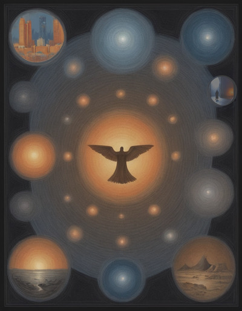

Creation¶
{kind=link}
All the players make the game world together, so each campaign must start with a pitch session where players come together and decide what world they want to play in.
Tone¶
Before generating specific ideas or pitches, spend a moment to decide on a tone.
Are people looking for a something epic? Light four color heroes? Or even a cartoon sort of game? Nothing is written in stone but get the feeling of the people at the table.
The system itself skews fairly heroic, lacking mechanisms for permanent disfigurement, sanity loss and other systems common in darker games. This can be adjusted, or just handwaved, but more work will be required to play a deadly dark game.
Redlines¶
Any pitch session should start by asking what people don’t want to play. Are people burned out on western fantasy or cyberpunk? It’s best to know that early.
The goal is to find a pitch that engages everyone enough to build that world, so discarding anything that won’t make the cut early is helpful.
Pitches¶
Next, it’s time for some actual pitches.
A pitch should be one or two sentences maximum.
They don’t have to be complete idea or settings, a component to add to another pitch also helps.
Don’t bother to get specific, just write them down and move on.
Sample Ptiches
|
|
After there are four or five pitches on the table, start delving into the pitches. Don’t go deep, go wide.
Pick up a pitch and ask a few questions, fleshing it out, then move on to the next one. During this process people may reject pitches, add new pitches, or merge pitches. This is great don’t interrupt it.
If a pitch isn’t grabbing anyone, throw it away. Mix and match elements from different pitches. Ask more questions about pitches that seem to have legs. Flesh it out making it more real.
No matter what the answers, they are just ideas, so don’t be afraid to go wild. Keep going until you have a pitch the whole table is excited about.
If you come to a dead end, and find nothing everyone loves, don’t be afraid to throw it all out and generate some new pitches. Everyone at the table is going to invest precious time into this world your group is creating, it should be something they all want to spend time with.
When you find something everyone loves, take a moment to lock down a couple of knobs. These will make sure everyone is on the same page, and allow narration to be credible to everyone.
Tech Level¶
What is the level of technology in the world? Is everyone at the same tech level, or do different cultures or countries use vastly different technologies?
The world may also have very different tech levels for different technologies. For example, high biological tech, but limited information tech. For extremely advanced technologies it may be thought of more as magic than tech.
Magic Level¶
Another question to ask is what is the place and prevalence of magic? Is the group looking for a game where fireballs and rings of invisibility are common occurrences, or is magic rare, dangerous and hard?
Make sure everyone is on at least a similar page. If there is magic, what sorts of magic exist in the world? Is there one system or many? Flexible or prescribed? Players will get a chance to dictate answers, but for now it’s good enough to have an idea.